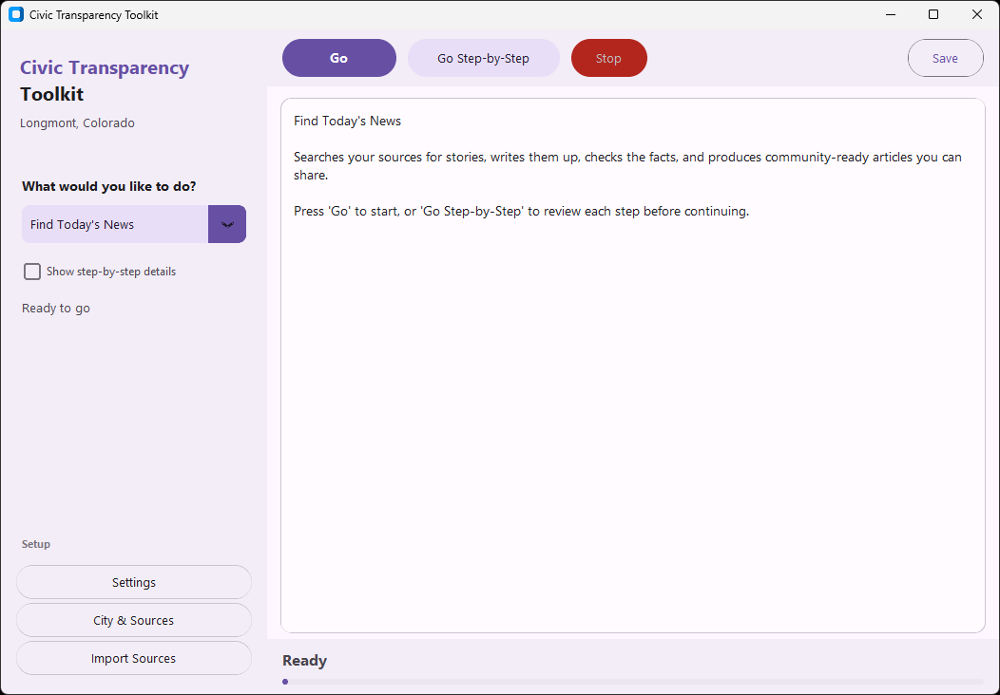
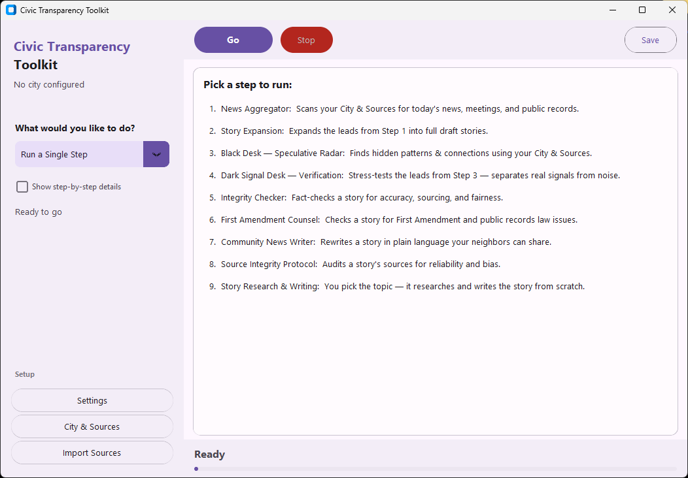
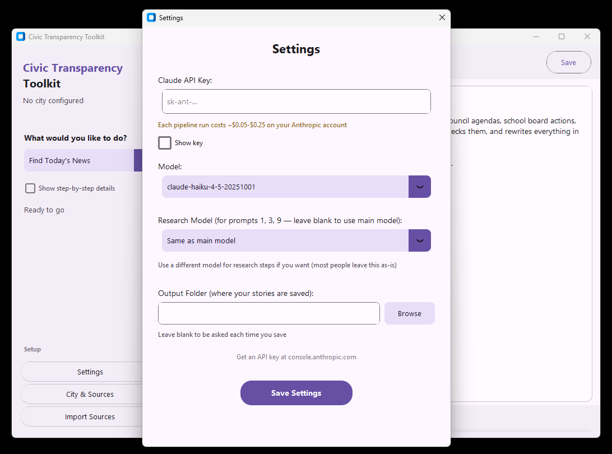
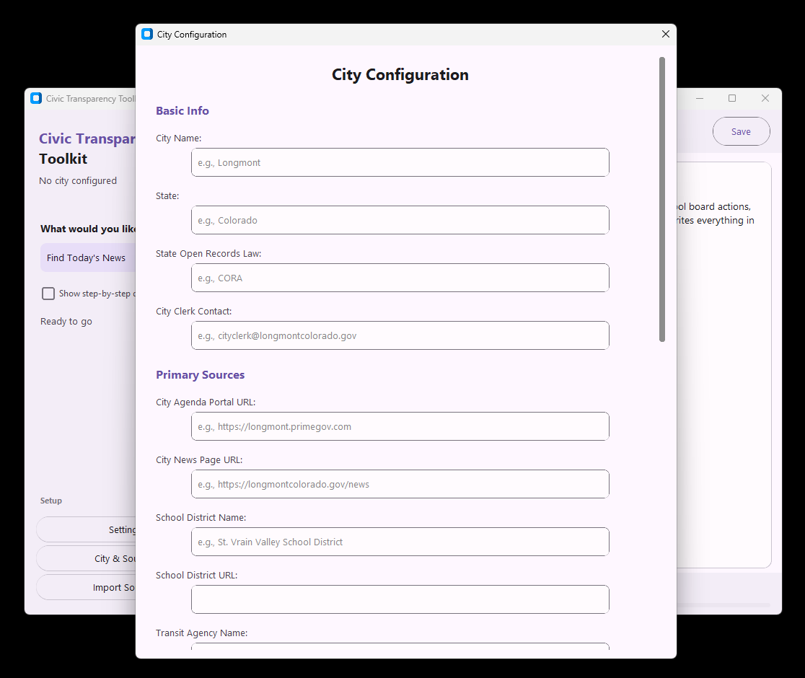

A free desktop app for running a structured civic-records workflow with AI assistance
Since 2005, more than 2,500 U.S. newspapers have closed. City councils still meet. Budgets still get passed. Contracts still get awarded. But in most communities, nobody is reading any of it.
The Toolkit helps a human operator collect public-record sources, run a multi-step review pipeline, organize findings, and export draft civic reporting. It is the desktop version of the Civic Newsroom prompt workflow.
The Toolkit is designed to reduce common AI reporting failures by forcing more explicit sourcing, counter-checking, and review steps. It does not guarantee correctness. It makes weak or unresolved work easier to spot before publication.
Both versions run the same core editorial logic. Both require human review. Both depend on source quality and operator judgment.
Actual setup time depends on how quickly you gather sources and configure your workflow.

Main dashboard
Workflow selection
Settings
Source configuration